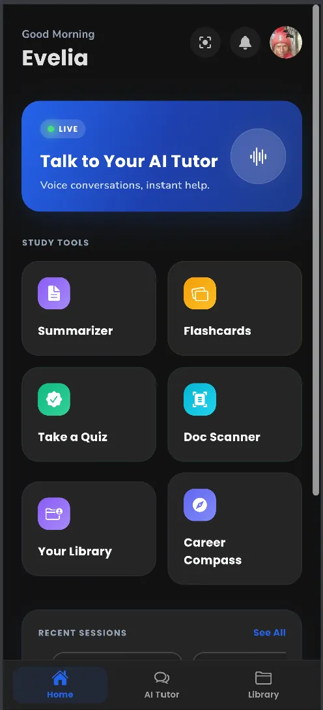
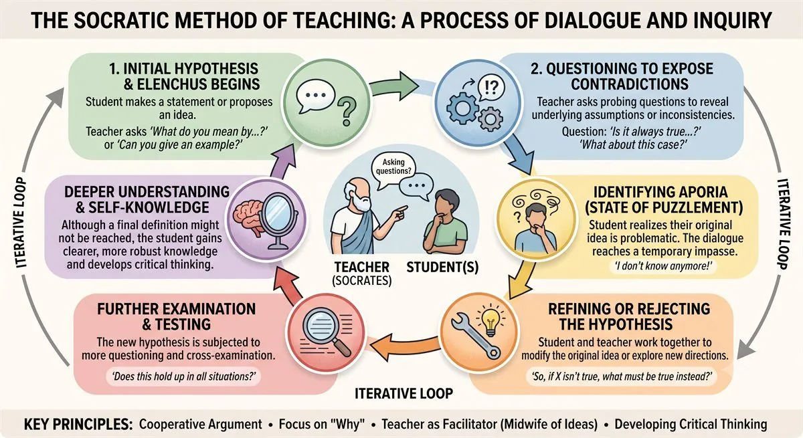
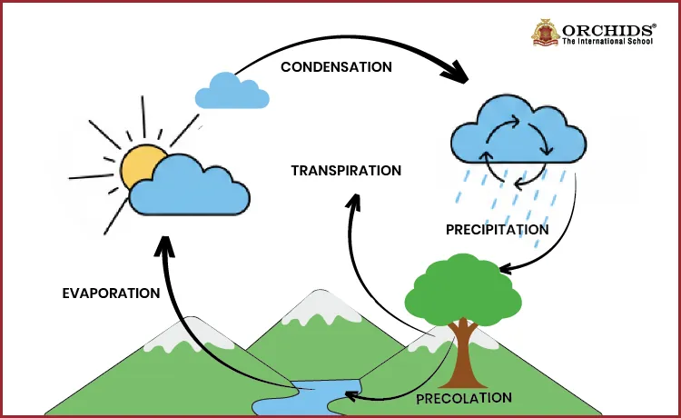
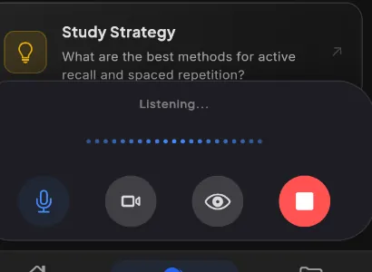

A tutor that teaches you to think, not just gives you the answer.
TopScore AI helps you work toward understanding, not just a finished answer. It asks the next question, shows the diagram, and walks you through the idea with learning support designed for CBC, 8-4-4/KCSE, and Cambridge IGCSE students across Kenya.

It asks the next question — it doesn't just answer the first one.
Paste a question into a generic chatbot and you get a finished answer, copied and forgotten. TopScore AI teaches the Socratic way: it questions, hints, and nudges until you reach the answer yourself — because a fact you worked for sticks, and one you were handed doesn't.
Purpose-built learning support for your curriculum
Real diagrams, not shapes an AI improvised.
Most AI tools draw a diagram fresh every time you ask — which means labels drift and details quietly go wrong. TopScore AI pulls from a library of real, curriculum-vetted diagrams, so the water cycle you see today is the same one your teacher would put on the board.

Illustrative example — real lessons use labelled, vetted diagrams like this one for every curriculum topic, not freehand AI sketches.
Study tools designed for a five-inch screen.
No laptop required. Every feature is built mobile-first, so a phone in Nairobi or Nyeri gets the same premium tutoring experience.
Long-term memory
The tutor remembers your past sessions, mistakes, and goals — so every explanation builds on what you actually know, not a blank slate.
Up to date, always
Questions about current events or recent facts are checked against real Google Search results, not a frozen training set.
Thousands of resources
Notes, past papers, and revision guides — ready to use immediately, with nothing to build from scratch yourself.
Smart PDF viewer
Open any textbook or past paper and ask questions right inside it — the AI reads along and points to the exact page.
Flashcards
Turn any topic into a flashcard deck in seconds, and review it in spare minutes between classes.
Quick & multiplayer quizzes
Run a quick quiz solo to check understanding, or challenge friends to a live multiplayer round if you learn best through competition.
Call your tutor. Let it see your screen and your camera.
Some questions are easier said out loud. Start a live voice call with your AI tutor, share your screen when you're stuck on a diagram, or point your camera at a worked example on paper — the tutor sees exactly what you see and talks you through it in real time.

From question to real understanding.
Ask, however you like
Type, snap a photo, or start a voice call — however the question comes to mind.
Get guided, not told
The tutor asks a question back, or shows a real diagram, until the idea clicks for you.
Practice right after
A quick quiz or flashcard set locks in the concept while it's still fresh.
Pick up where you left off
Long-term memory means tomorrow's session starts from today's progress, not from zero.
A premium interface for every screen size.
Real screens from the app — designed to minimise distraction and keep the focus on the question in front of you. Scroll to preview each one.
Student dashboard
Track mastery, streaks, and progress at a glance, powered by the tutor's long-term memory of you.
AI tutor chat
Real-time, one-on-one tutoring that questions and guides rather than just answering.
Smart library
Thousands of ready-to-use, curriculum-vetted resources — always synced across your devices.
Personalized for exactly what you're sitting.
Whether you're navigating the new competency-based system, finishing the 8-4-4 cycle, or preparing for Cambridge, the tutor adapts to your syllabus — not the other way round.
CBC
Grade-by-grade learning paths mapped to strands and sub-strands, from Early Years to Senior School.
Learn more8-4-4
Full KCSE past-paper coverage and revision notes for students completing the outgoing system.
Learn moreIGCSE
Cambridge-aligned resources and grounded AI explanations for every core and elective subject.
Learn moreSafe, accurate, and built for real classrooms.
Strict content moderation
Every AI interaction is filtered to stay educational and age-appropriate.
Checked against real sources
Answers are grounded in your curriculum and, where needed, real Google Search results — not guessed from memory.
Encrypted student data
Study history and personal information are encrypted end to end.
Parent oversight
A dedicated dashboard lets parents monitor study sessions and progress.
Elite tutoring, for every student.
We believe personalized tutoring shouldn't be a privilege reserved for those who can afford a private tutor. TopScore AI brings the same one-on-one attention to a phone in Nairobi as it would to a classroom in London — at a fraction of the cost.
Private tutor quality, without the private tutor bill.
See how a Socratic, curriculum-backed AI tutor stacks up against the two alternatives most Kenyan students already try.
| Private tutor | Generic AI chatbot | TopScore AI | |
|---|---|---|---|
| Cost | High, per hour | Often free, limited | From KES 0 |
| Available at 11pm before an exam | Rarely | Yes | Yes |
| Checked against CBC / KCSE / IGCSE | Depends on tutor | Rarely | Always |
| Teaches with real diagrams | Sometimes | Improvised | Curriculum-vetted |
| Guides with questions, not just answers | Depends on tutor | Rarely | Always, Socratic |
| Remembers your progress next time | If it's the same tutor | No | Long-term memory |
Voices from the classroom, the kitchen table, and the staff room.
Real situations from the people TopScore AI is built for — students working through a topic, parents checking in on progress, and teachers using it alongside their lessons.
I was stuck on balancing chemical equations for two weeks. The tutor walked me through it with questions instead of just giving me the answer — when I finally got it, it actually stuck.
My daughter uses it for Maths and Sciences. The best part for me is the parent dashboard — I can see what she's working on and how she's progressing without hovering.
It's the first AI tutor I've seen that respects the curriculum. The diagrams are accurate, the explanations match what we're teaching, and the Socratic approach actually builds thinking — not just answers.
Plans for every scholar.
Start free. Every premium plan opens with a 7-day trial, so you can feel the difference before you pay for it.
- 3 AI scans per day
- CBC & KCSE notes
- Web & mobile access
- Unlimited AI scans
- Live voice tutor with screen & camera
- Multiplayer quizzes
- Full practice library
- Everything in Weekly
- Long-term memory across every session
- Smart PDF viewer
- Downloadable study guides
Everything to know.
Is this just a wrapper around ChatGPT?
No. Every answer is checked against your actual CBC, 8-4-4, or IGCSE curriculum before it reaches you, and the tutor is built to teach through questions rather than hand you a finished response.
Does it just give me the answer?
Not by default. TopScore AI uses a Socratic approach — asking guiding questions and showing worked examples so you reach the answer yourself, rather than just reading one.
Are the diagrams AI-generated on the fly?
No. Diagrams are pulled from a library of real, curriculum-vetted illustrations rather than improvised by the AI, so labels and details stay accurate every time.
Does it remember me between sessions?
Yes. The tutor keeps a long-term memory of your past questions, mistakes, and goals, so each session builds on the last instead of starting over.
Can it answer questions about recent events?
Yes — for anything time-sensitive, the AI runs a real Google Search rather than relying on a fixed training date, so current facts stay current.
Is there a free trial?
Yes. Both paid plans open with a 7-day free trial of Premium, and the Basic plan stays free forever regardless.
Which subjects and curricula does it cover?
Core subjects across CBC, 8-4-4/KCSE, and Cambridge IGCSE — mathematics, sciences, languages, and humanities — each backed by curriculum-vetted resources.
Is TopScore AI available across Kenya?
Yes. It's a mobile-first app available on Android and the web anywhere in Kenya, with an offline-friendly resource library for areas with limited connectivity.
How much data does the app use?
Very little. Most resources are cached locally after the first download, and the AI responses are text-based. The app is built for Kenya's network conditions and works well even on 2G/3G connections.
Can parents monitor their child's progress?
Yes. Premium plans include a parent dashboard where you can see study time, topics covered, progress trends, and areas where your child needs support — without seeing individual chat messages.
Is my data safe and private?
Yes. All study data is encrypted end-to-end, and we comply with Kenya's Data Protection Act, 2019. We never sell student data to third parties or use it for advertising. See our Privacy Policy for full details.
Can I use TopScore AI for exam preparation?
Absolutely. The app includes thousands of past papers (KCSE, CBC assessments, IGCSE), targeted revision quizzes, and personalized study plans that help you focus on weak areas before exams.
Do I need internet to use TopScore AI?
You need internet for the AI tutor (it needs to think in real-time). But the resource library — notes, past papers, flashcards — can be downloaded for offline access, perfect for areas with unreliable connectivity.
Can schools or teachers use TopScore AI?
Yes. We offer special school licenses with bulk pricing, teacher dashboards, and class progress reports. Contact us to discuss educational partnerships and institutional access.
Start learning smarter today — for free.
Download TopScore AI on Android or iOS. Basic is free forever, and every premium plan opens with a 7-day free trial. No credit card required to start.